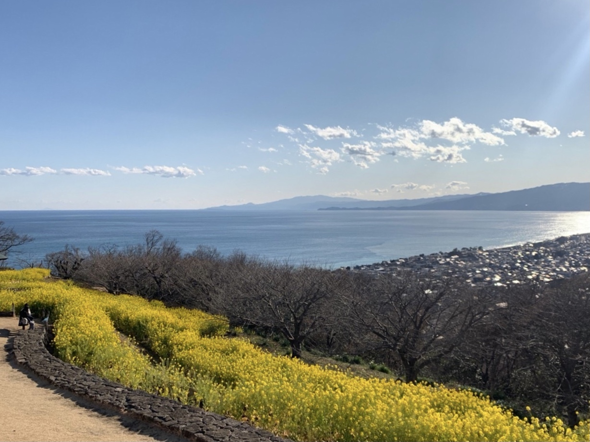
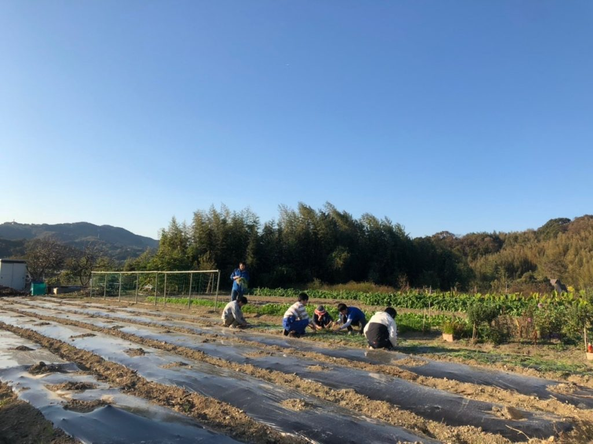
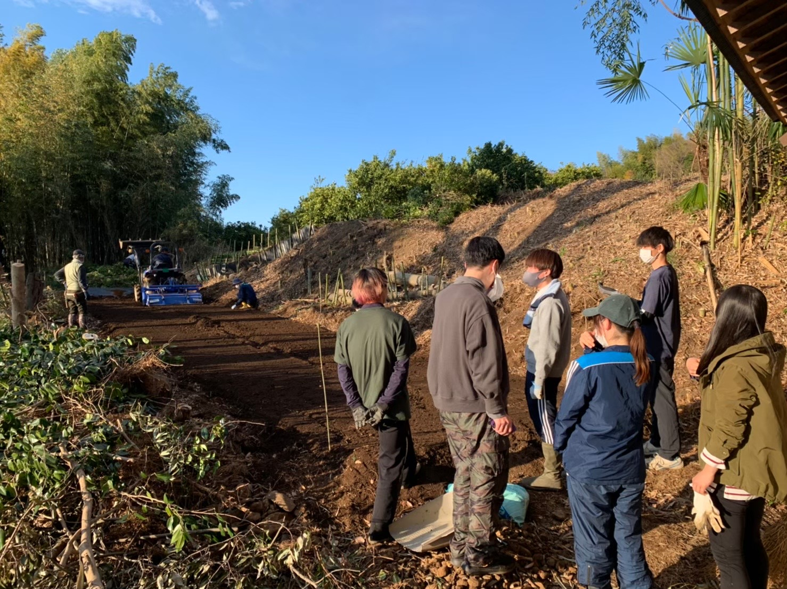
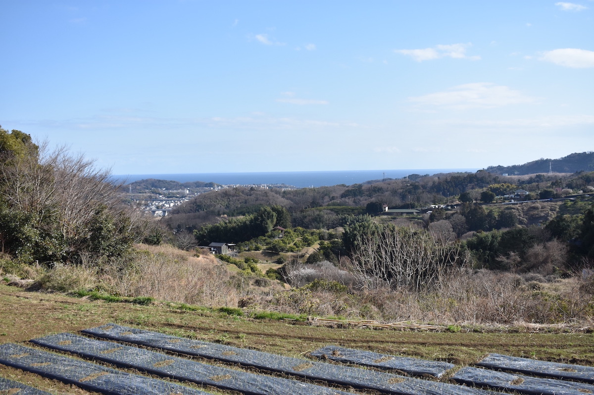
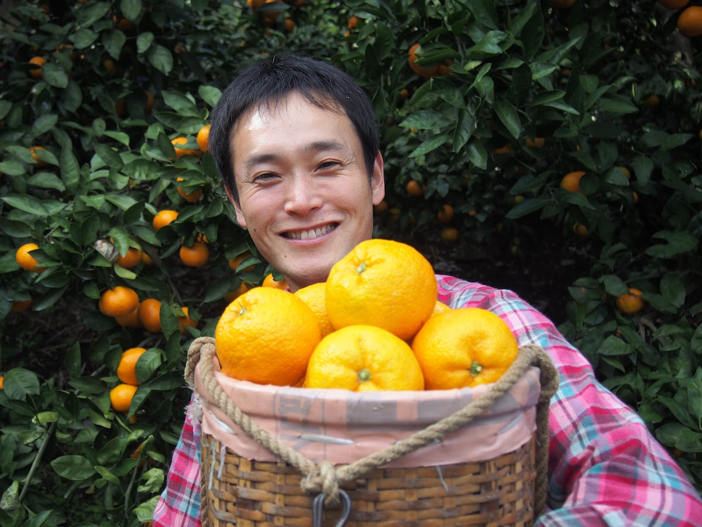
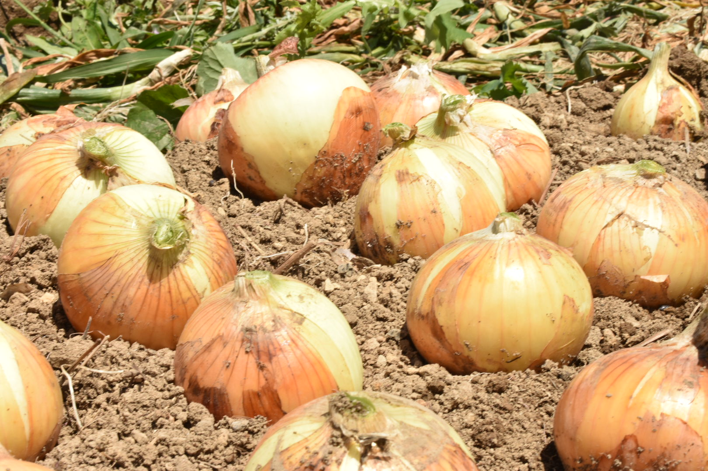
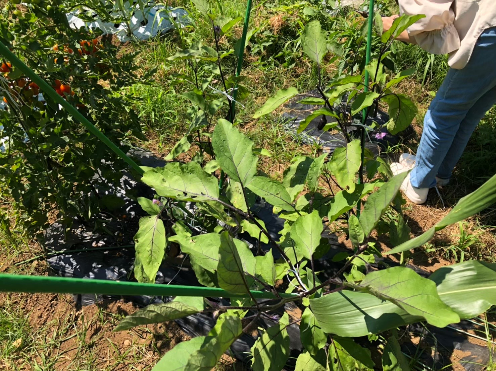
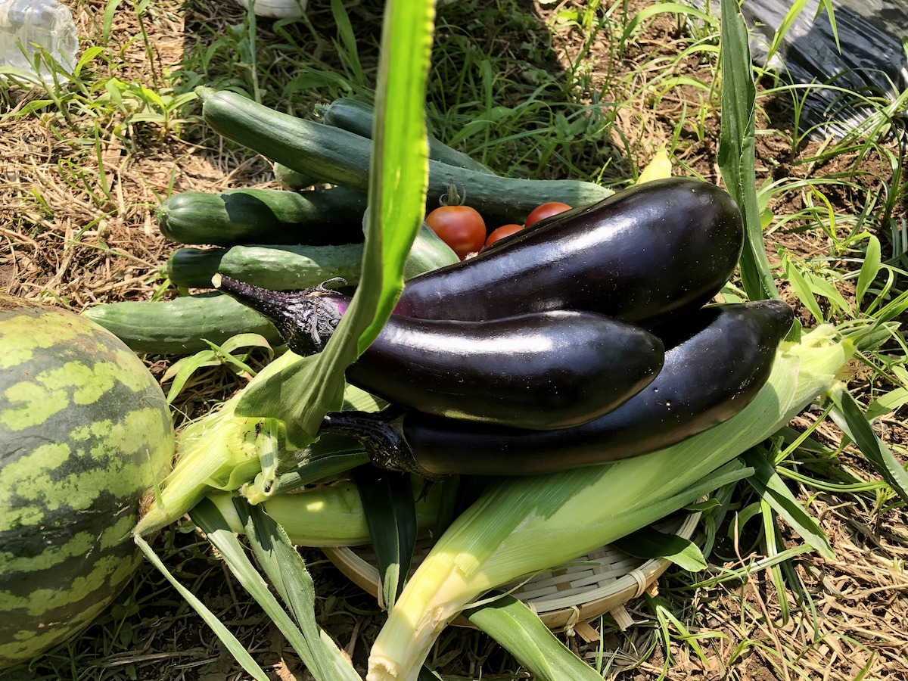
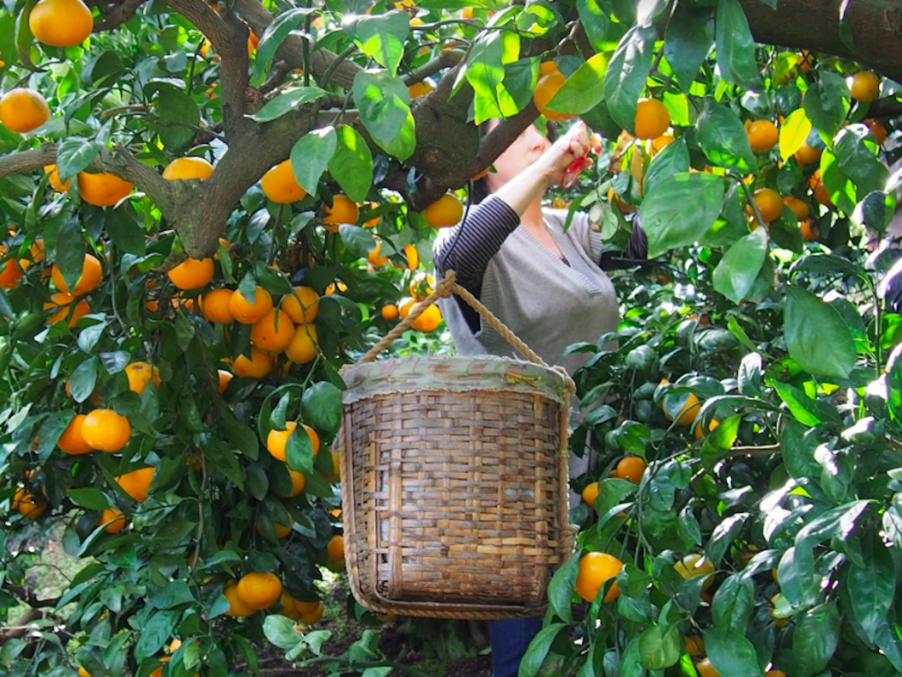

Garally
活動の様子を写真で紹介します。

神奈川県の二宮町から小田原市東部で活動しています。海と山が近接した自然の豊かな地域で、昔からの第一次産業が盛んです。

禅龍寺農園。富士山を臨む見晴しの良い畑です。東京大学Agrlienの活動はここからスタートしました。

東際寺農園。近隣の農家さんにご協力いただいて竹林を開墾し、2022年から栽培をスタートしました。

あきさわ園の鷹ノ巣山農園。海を臨む山の上の畑です。2020年から玉ねぎの栽培をおこなっています。

あきさわ園の秋澤史隆さん。世界中の農業を見て回った経験もあり、いろいろなことを教えてくれます。

春は玉ねぎ収穫の季節。丸々と大きくなった玉ねぎがたくさん収穫できます。

弥生キャンパス内の畑。年間を通して20種類近い野菜を栽培しています。

夏のキャンパスの収穫風景。色んな野菜作りに挑戦しています。農薬不使用なので、上手くいくこともいかないことも。

年末はみかん収穫の季節。あきさわ園の収穫作業をお手伝いしたりもします。